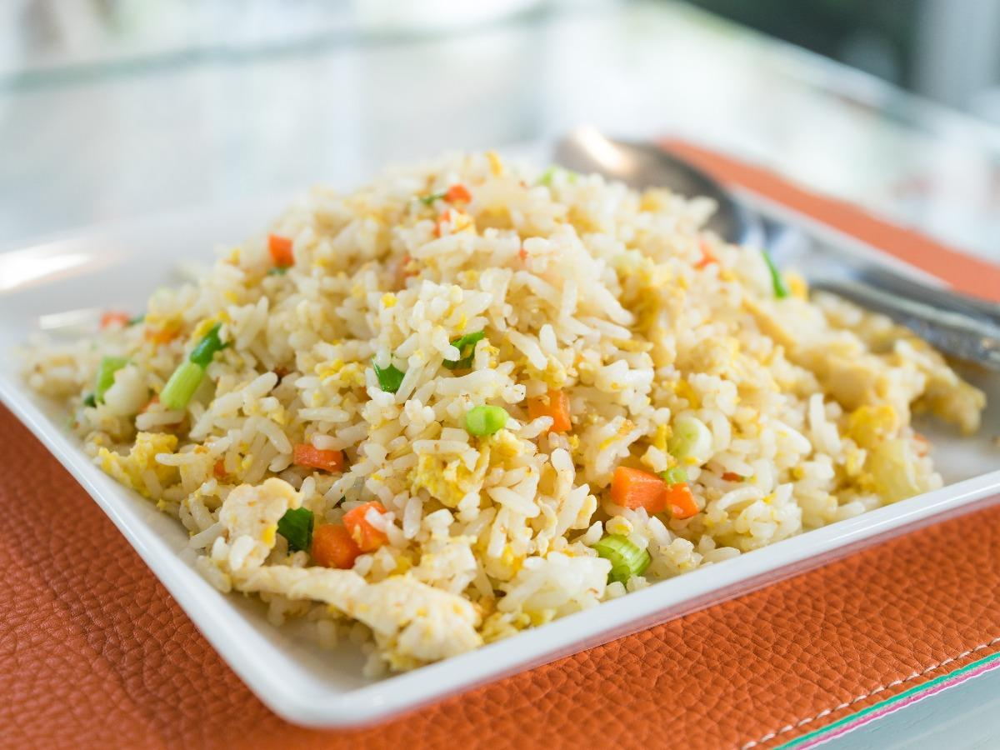

Fried Rice

Description
Fried rice is a dish of cooked rice that has been stir-fried in a wok or a frying pan and is usually mixed with other ingredients such as
eggs, vegetables, seafood, or meat. It is often eaten by itself or as an accompaniment to another dish.
Ingredients
- Egg white
- Olive oil
- Mixed vegetable
- Egg
- Brown rice
Steps
- Cook rice: combine one part rice to around 2 parts water. Bring to boil, reduce heat to low and cover, cooking until rice is tender.
- Heat the olive oil in a pan and add the cooked rice. Scramble the egg whites and whole egg together in a bowl and add to rice. Mix well.
- Add your favorite mixed vegetables.
- Cook until heated all the way through. Optional: add a little soy sauce if it's too dry, or some chicken to make it a full meal.
Back to home page
You may also like: Cream Cheese Turkey Rollups,
Roasted Salmon